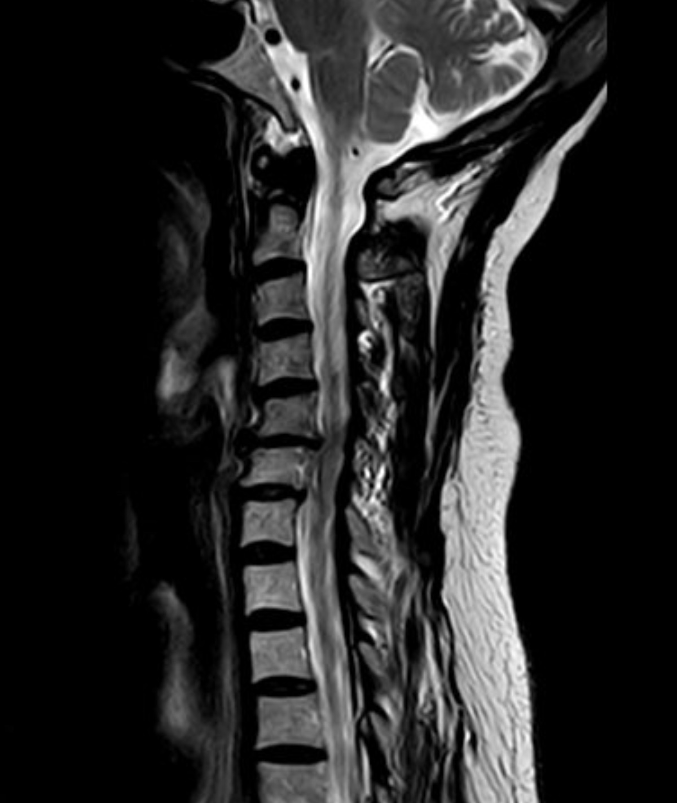
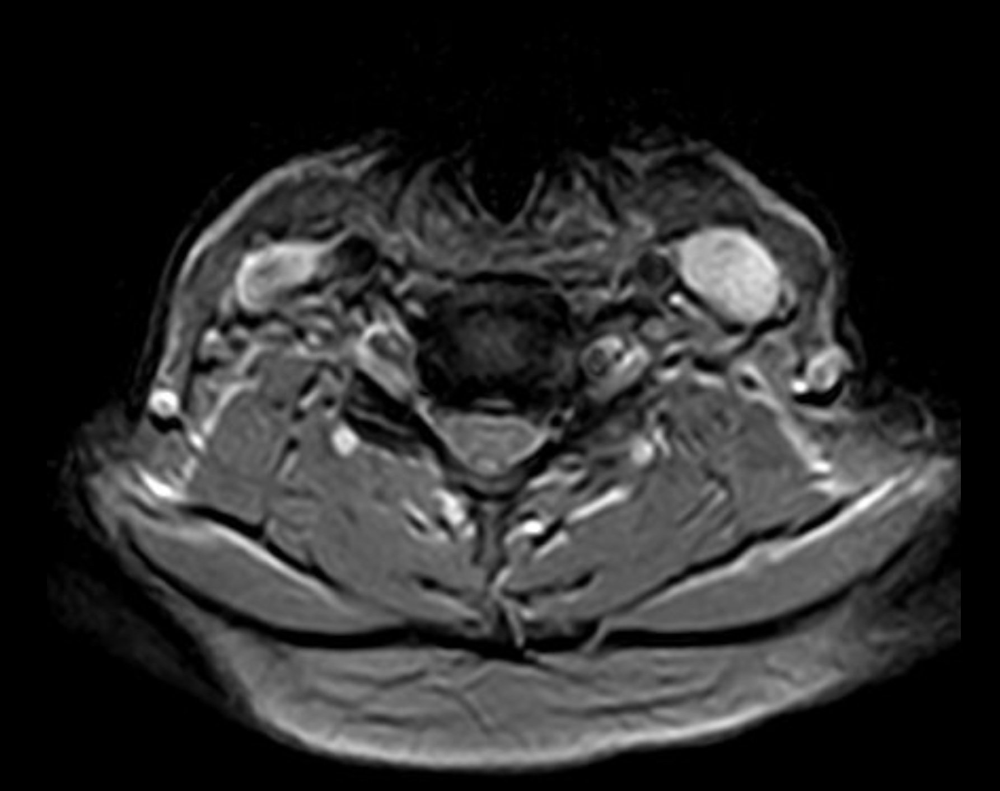
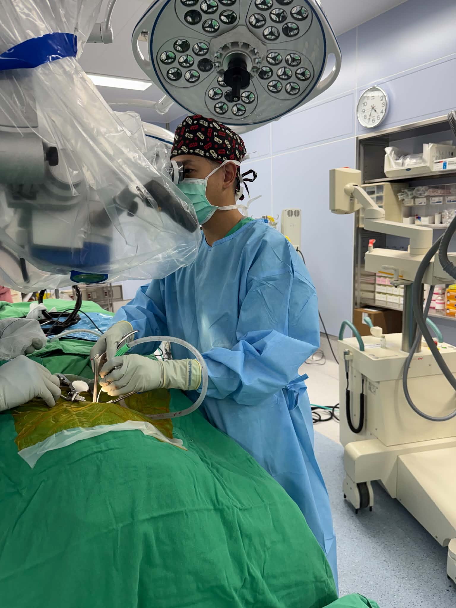
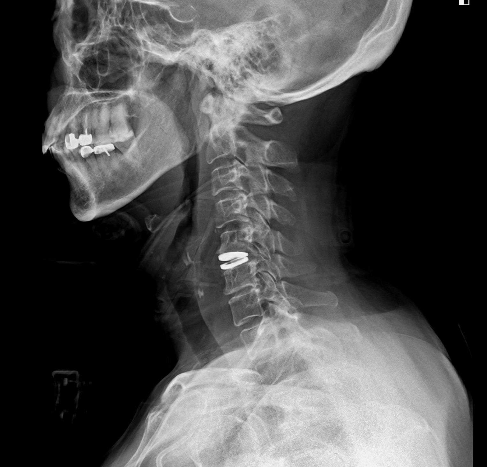
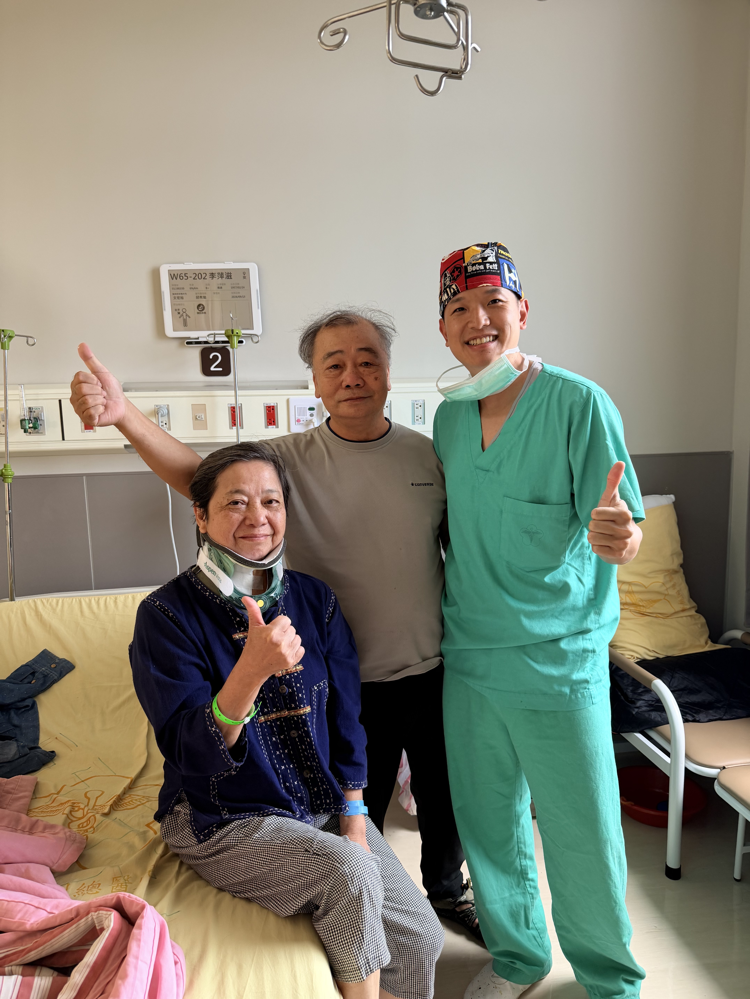

頸部疼痛合併左手臂麻痛，忍耐多時仍無法改善
69 歲的李女士，長時間受到頸部疼痛與左手臂麻痛困擾。
一開始，她以為只是肩頸痠痛、姿勢不良，或年紀增長造成的退化不適。
但隨著時間拉長，疼痛不只停留在脖子，還一路延伸到左側手臂，麻痛感越來越明顯，甚至影響日常生活。
對李女士來說，最辛苦的不是單純「脖子痠」，而是左手臂麻痛反覆發作，讓她無法自在活動，也讓先生看在眼裡十分心疼。
後來，李女士在先生陪同下來到門診，希望能找出真正造成疼痛與手麻的原因。
頸部疼痛合併手臂麻痛，常常不只是肌肉痠痛。
如果症狀持續一段時間，甚至已經影響生活，就需要進一步評估是否有頸椎椎間盤突出、神經孔狹窄或神經根壓迫。
檢查發現：C5/6 椎間盤突出與狹窄，造成左側神經根壓迫
經過問診問診、理學檢查與頸椎 MRI 檢查後，發現李女士的問題位在頸椎第五、六節。
影像顯示 C5/6 椎間盤突出合併狹窄，造成左側神經根受到壓迫，也就是所謂的左側 cervical radiculopathy。
這可以解釋她長期頸部疼痛，以及左手臂麻痛難耐的症狀。
頸椎神經根受到壓迫時，常見症狀包括：
- 頸部疼痛。
- 肩膀或膏肓附近痠痛。
- 手臂一路麻痛。
- 手指麻木。
- 握力下降。
- 手部活動變得不順。
李女士的狀況屬於：
頸椎第五、六節椎間盤突出與狹窄，造成左側神經根壓迫。

術前頸椎 MRI：顯示 C5/6 椎間盤突出與狹窄，合併左側神經根壓迫。
圖片說明：術前 MRI 可見頸椎第五、六節病灶，與李女士左手臂麻痛症狀相符。

術前頸椎 MRI：顯示 C5/6 椎間盤突出與狹窄，合併左側神經根壓迫。
治療考量：不只解除神經壓迫，也要考慮頸椎長期活動與相鄰節段負擔
頸椎手術的第一個目標，是解除神經壓迫。
但減壓之後，椎間空間要如何重建，會影響頸椎後續的穩定度、活動度與相鄰節段負擔。
傳統頸椎融合手術可以提供穩定支撐，對於嚴重退化、不穩定、骨刺明顯或關節退化嚴重的患者，是很重要的治療方式。
但如果病症條件合適，頸椎仍有保留活動度的空間，就可以評估人工椎間盤置換術。
與李女士充分討論後，考量她的症狀來源明確，病灶集中於 C5/6，且希望在解除神經壓迫後，盡量減少對上下相鄰節段的代償負擔，因此選擇進行頸椎人工椎間盤置換術。
人工椎間盤置換的概念是：
清除壓迫神經的病灶後，置入可活動式人工椎間盤，盡量保留該節段較自然的活動功能。
對適合的患者來說，人工椎間盤置換的優點包括：
- 解除神經壓迫。
- 維持椎間高度。
- 保留頸椎活動度。
- 可能減少上下相鄰節段的代償壓力。
治療方式：前頸椎減壓合併人工椎間盤置換術

李女士接受前頸椎減壓合併人工椎間盤置換術。
手術經由頸部前側小切口，順著自然解剖間隙進入 C5/6 病灶位置，清除造成神經壓迫的椎間盤突出與狹窄組織，讓受壓迫的神經重新獲得空間。
完成神經減壓後，再置入人工椎間盤，協助維持椎間高度與頸椎活動功能。

術後頸椎 X 光：顯示 C5/6 人工椎間盤置換位置。
圖片說明：術後 X 光可見人工椎間盤位置，協助維持椎間高度與頸椎功能。
治療後變化：恢復良好，重新回到正常生活

手術後，李女士恢復情況良好。
原本讓她困擾多時的頸部疼痛與左手臂麻痛逐步改善，日常活動也慢慢恢復正常。
後續門診追蹤時，術後 X 光顯示人工椎間盤位置穩定，屈曲與伸展影像也可觀察到頸椎活動狀況。
對李女士來說，最重要的改變，不只是影像上神經壓迫被解除，而是生活不再一直被頸部疼痛與手臂麻痛限制。
陪伴她一起就醫的先生，也明顯感受到太太重新找回健康與生活品質的喜悅。
文宏裕醫師的治療觀點
頸椎人工椎間盤置換術，不是每一位頸椎神經壓迫患者都適合。
真正重要的是判斷：
- 神經壓迫的位置是否和症狀相符？
- 頸椎活動度是否仍然良好？
- 有沒有明顯頸椎不穩定？
- 關節退化或骨刺是否嚴重？
- 患者的年齡、身體條件與生活需求是什麼？
如果頸椎已經嚴重退化、不穩定或關節磨損明顯，融合手術可能反而是更安全、更穩定的選擇。
但如果病灶條件合適，人工椎間盤置換可以在解除神經壓迫後，盡量保留較接近原本頸椎的活動功能，並可能減少上下相鄰節段的代償負擔。
李女士的案例提醒我們，頸部疼痛合併手臂麻痛，不一定只是肩頸痠痛。
如果症狀持續數週到數個月，甚至已經影響生活，就應該進一步檢查是否有頸椎椎間盤突出、狹窄或神經根壓迫。
能保留活動度的，我們盡量保留；
需要穩定融合的，我們精準做好支撐。
不該開的刀，我不開；該開的刀，我做到最好。
手術不是目的，重新回到生活才是目的。
把時間留給生活，不留給疼痛。
案例提醒
本案例已去識別化處理，內容僅作為疾病與治療方式說明。
每位患者的頸椎退化程度、神經壓迫位置、治療方式與恢復速度都不同，實際治療仍需經由門診評估、理學檢查與影像判讀後，由醫師與患者共同討論決定。
若頸部疼痛合併手麻、手臂無力、握力下降、走路不穩，或出現雙手雙腳麻木無力、大小便控制異常，應儘快就醫評估。